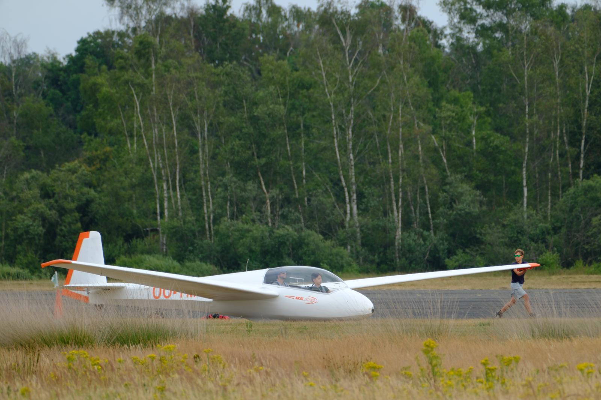
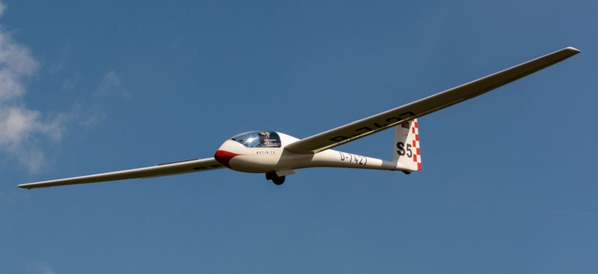
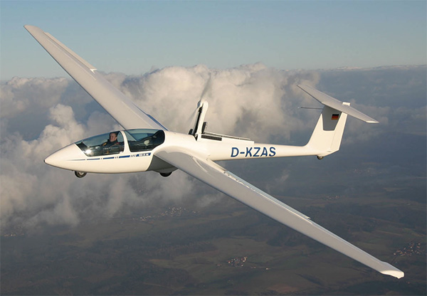
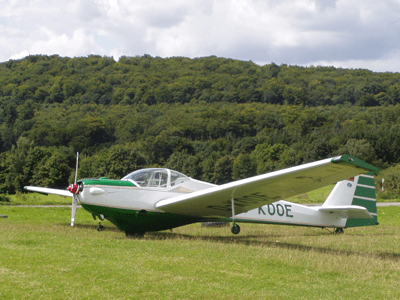
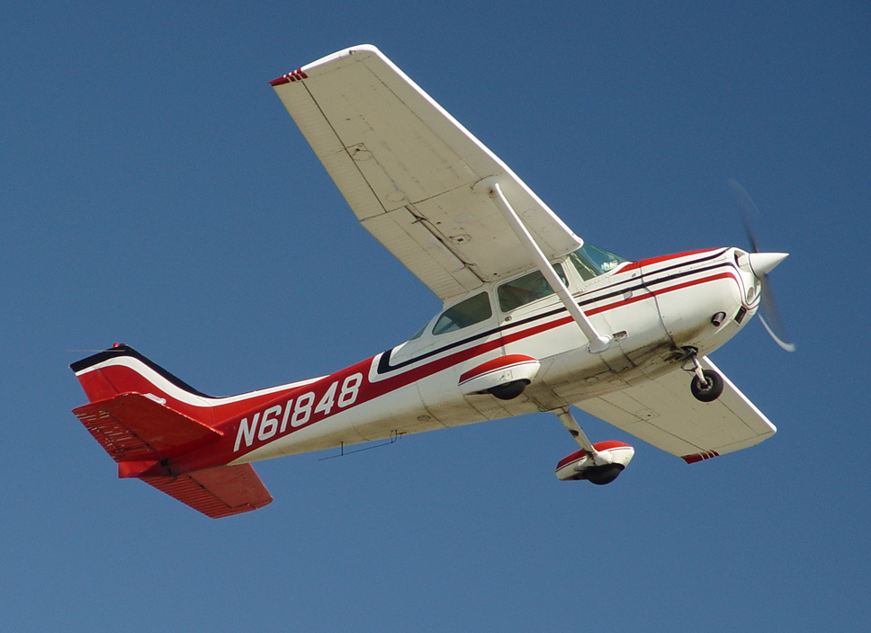

Hier begin je je vlieg opleiding mee. Je zit vanvoor in de cockpit met een instructeur vanachter. Zo kan je zelf vliegen, maar toch nog aangestuurd worden door een gevorderde.
foto: ASK-13

Eens dat je solo bent gegaan mag je na een bepaald aantal solovluchten op een echt solo vliegtuig. Het heeft geen achter stoel voor de instructeur meer en is vaak ook kleiner.
foto: astir CS

Vanaf dat je verder in je opleiding zit, krijg je de kans om navigatie en overlandsvluchten te doen. Dit doe je vaak weer met een instructeur om zoveel mogelijk te leren. Voor overlandsvluchten zijn thuisbrenger motoren optimaal, ze nemen de kans op een uitlanding bijna volledig weg waardoor alles veiliger wordt.
foto: Duo Discus met opengeklapte motor

Als je je verder wilt progresseren naar motorvliegtuigen is een touring motor glider de perfecte overgang. Een TMG vliegt vrijwel hetzelfde als een zweefvliegtuig, maar heeft dan ook een vaste motor.
foto: SF-25 C Falke

Met een motot vliegtuig is de laatste optionele stap die je kan zetten als je het zweefvliegen beu wordt. Je kan kiezen om verder opleding te volgen tot commerciële piloot of gewoon genieten van de ontelbare dingen dat je zal kunnen doen met een krachtige motor vanvoor.
foto: Cessna 172
